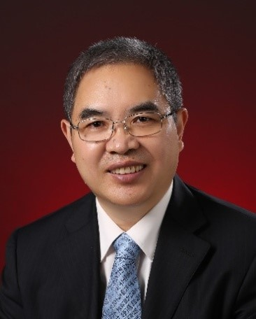

<td align="center" class="tbcolor10" colspan="2" valign="top">
<table border="0" cellpadding="0" height="100%" width="100%">
<tbody><tr><td align="right" height="35px" style="font-size:9pt">
<a href="javascript:window.close()" title="关闭本窗口">关闭窗口</a>｜<a href="print.asp?id=542127" target="_blank" title="打印本页内容">打印张贴版</a>    

</td></tr>
<tr>
<td align="center" height="500" valign="top">
<table border="0" cellpadding="4" cellspacing="0" height="100%" style="border-collapse: collapse;word-break:break-all;" width="86%">
<tbody><tr>
<td align="center" height="80px"><span style="font-family:方正小标宋简体;font-size: 25px;color: #C70E5C">【学术讲座】AI 与信息论--- 理论与实践中遇到问题与挑战</span></td>
</tr>
<tr>
<td align="center" height="50px" style="font-size: 9pt"><font color="#808080">电子与信息工程学院　2025/3/3 10:33:00</font><br/> 
<font color="#F8F8F8" style="font-size:9pt">（钟沛基 2022280095）</font></td>
</tr>
<tr>
<td height="300" valign="top">
<p class="MsoNormal" style="mso-outline-level:1;layout-grid-mode:char;mso-layout-grid-align:
none"><b style="mso-bidi-font-weight:normal"><span style="font-size:12.0pt">讲座嘉宾：樊平毅<span lang="EN-US">, </span>清华大学 二级教授<span lang="EN-US">/</span>博导<span lang="EN-US"><o:p></o:p></span></span></b></p>
<p align="left" class="MsoNormal" style="text-align:left;line-height:21.0pt;
mso-pagination:widow-orphan;layout-grid-mode:char;mso-layout-grid-align:none"><b style="mso-bidi-font-weight:normal"><span style="font-size:12.0pt">邀 请 人：何业军 教授<span lang="EN-US"><o:p></o:p></span></span></b></p>
<p align="left" class="MsoNormal" style="text-align:left;line-height:21.0pt;
mso-pagination:widow-orphan;layout-grid-mode:char;mso-layout-grid-align:none"><b style="mso-bidi-font-weight:normal"><span style="font-size:12.0pt">时   间 ： <span lang="EN-US">3</span>月<span lang="EN-US">6</span>日（周四）下午
<span lang="EN-US">3:00<o:p></o:p></span></span></b></p>
<p class="MsoNormal" style="layout-grid-mode:char;mso-layout-grid-align:none"><b style="mso-bidi-font-weight:normal"><span style="font-size:12.0pt">地  点 ：  致信楼<span lang="EN-US">N710<o:p></o:p></span></span></b></p>
<p class="MsoNormal" style="layout-grid-mode:char;mso-layout-grid-align:none"><b style="mso-bidi-font-weight:normal"><span lang="EN-US" style="font-size:12.0pt"><o:p> </o:p></span></b></p>
<p class="MsoNormal" style="layout-grid-mode:char;mso-layout-grid-align:none"><b style="mso-bidi-font-weight:normal"><span style="font-size:12.0pt">摘要：</span></b>本报告主要探讨了<span lang="EN-US">AI</span>与信息论在<span lang="EN-US">6G</span>发展中的应用与挑战，涵盖了生成式模型、增强学习、分布式架构等技术在<span lang="EN-US">6G</span>网络、自动驾驶、语义通信等场景中的应用。同时，提出了<span lang="EN-US">AI</span>可解释性、模型设计、与人类协调等方面的挑战，并展望了未来信息论与<span lang="EN-US">AI</span>结合的研究方向。<span lang="EN-US"><o:p></o:p></span></p>
<p class="MsoNormal" style="layout-grid-mode:char;mso-layout-grid-align:none"><span lang="EN-US"><o:p> </o:p></span></p>
<p class="MsoNormal" style="layout-grid-mode:char;mso-layout-grid-align:none"><b style="mso-bidi-font-weight:normal"><span style="font-size:12.0pt">个人介绍：<span lang="EN-US"><o:p></o:p></span></span></b></p>
<p class="MsoNormal">清华大学电子工程系长聘教授（国家二级教授），开源数据认知创新中心主任，美国国家人工智能科学院院士 （<span lang="EN-US">US-NAAI</span>），<span lang="EN-US">NAAI</span>亚洲研究院学术委员会合作主席，英国工程与技术学会会士
（<span lang="EN-US">IET Fellow</span>）和<span lang="EN-US">IET </span>会士国际评审委员会成员。 <span lang="EN-US">1994 </span>年在清华大学电子工程系获博士学位，<span lang="EN-US">1997-1999 </span>年在香港科技大学和美国特拉华大学访问，多次到美国、欧洲、日本、香港和新加坡多所大学和研究所访问。作为主持人承担国家<span lang="EN-US"> 973</span>、<span lang="EN-US">863</span>、移动专项、重点研发计划，国家自然基金和国际合作项目和课题。发表学术论文<span lang="EN-US">600</span>多篇 （<span lang="EN-US">ORCID</span>），其中发表<span lang="EN-US">
IEEE </span>杂志<span lang="EN-US"> 170</span>多篇，<span lang="EN-US">ESI</span>高被引论文<span lang="EN-US">10</span>多篇。申请国家专利<span lang="EN-US">40</span>多项，国际专利<span lang="EN-US">7</span>项，学术著作<span lang="EN-US"> 4 </span>部。获<span lang="EN-US"> IEEE ICC2020</span>、<span lang="EN-US">
Globecom2014 </span>等<span lang="EN-US">10</span>个<span lang="EN-US">IEEE</span>国际会议最佳论文奖，<span lang="EN-US">IEEE TAOS 2020 </span>年度最佳论文奖，<span lang="EN-US">IEEE TWC (2009) </span>优秀杂志编委奖<span lang="EN-US">.<span style="mso-spacerun:yes">  </span>AEIC</span>（<span lang="EN-US">2023</span>）最受欢迎学者奖，<span lang="EN-US"> IEEE AASP </span>组织的声学场景和事件检测和分类竞赛<span lang="EN-US">-DCASE2024</span>挑战赛评委会特别奖（<span lang="EN-US">DCASE2024 Challenge
Judges’ Award</span>）等，任<span lang="EN-US"> IEEE </span>和<span lang="EN-US"> MDPI </span>等多个杂志的编委，包括<span lang="EN-US" style="mso-bidi-font-size:10.5pt;color:black">IEEE Transactions on
Cognitive Communications and Networking (TCCN) </span><span style="mso-bidi-font-size:
10.5pt;color:black">编委（<span lang="EN-US">2024-2026</span>） ，</span><span lang="EN-US">Open Journal of Mathematical Sciences </span>编委，<span lang="EN-US">
IAES international Journal of Artificial Intelligence (IJAI) </span>（<span lang="EN-US">2023-2026</span>）编委，中国信息论分会副主任，中国<span lang="EN-US"> 6G-ANA TG4 </span>合作主席，<span lang="EN-US">IEEE ChinaSIP </span>网络与通信技术委员会主席等。 在国际会议担任大会主席，技术委员会主席或大会主题报告<span lang="EN-US">40</span>多次。近期的主要研究方向包括<span lang="EN-US"> 6G </span>无线通信与智能网络、人工智能与系统检测、语义信息论与大数据信息处理等。<span lang="EN-US"><o:p></o:p></span></p><p class="MsoNormal" style="text-align: right;">电子与信息工程学院</p><p class="MsoNormal" style="text-align: right;">2025年3月3日</p></td>
</tr>
<tr><td height="0" style="font-size: 9pt"></td></tr>
<tr><td align="right" style="font-size: 9pt">撰稿：高志杰　审核：周浩江  <br/> </td></tr>
</tbody></table>
</td>
</tr>
</tbody></table>
</td>
